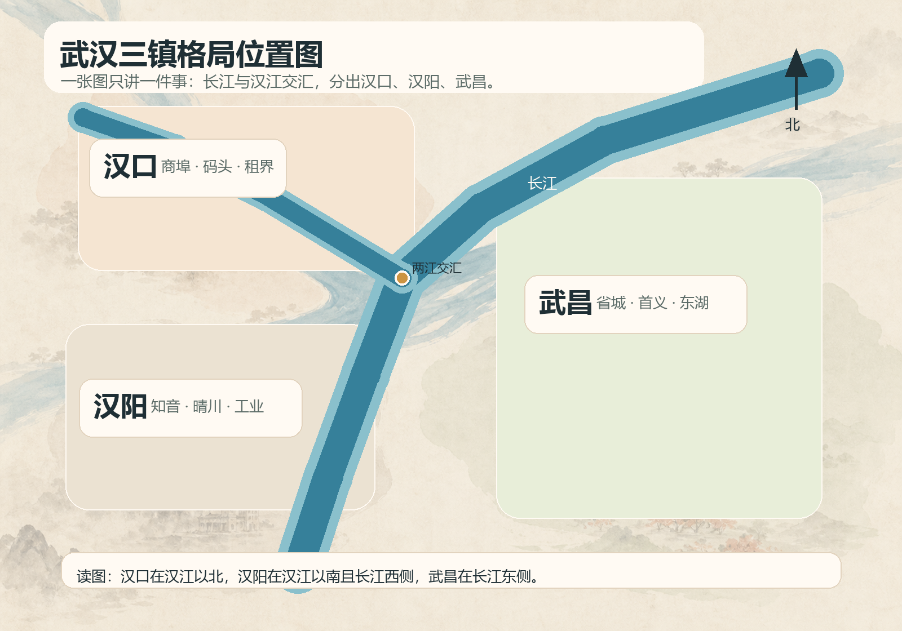
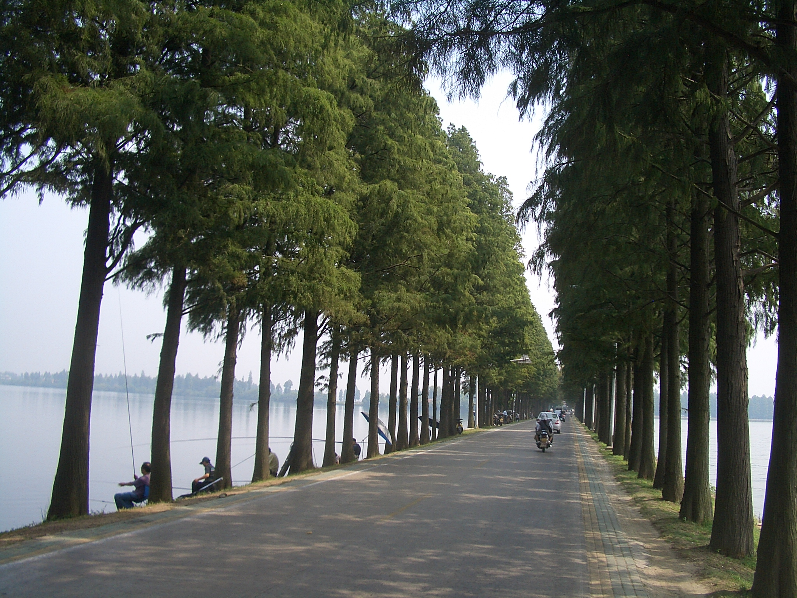

For Eason · Wuhan 2.5 days武汉不是景点城市，
武汉不是景点城市，
它要按江、街、早饭和三镇来读。
这版把 AI 插画换成了线上可核验实图：建筑、湖景、博物馆优先使用 Wikimedia Commons / 官方资料，美食图优先使用武汉市政府转载的长江日报图源。主体仍然是讲解，图片负责让页面不再寡淡。
6/26 午夜到6/27–6/28 自由6/29 下午参会6/30 中午返程实图优先，不靠 AI 猜
01 · 城市渊源
先理解武汉为什么会是“三镇”。
武汉不是天然的单中心城市。长江自西南向东北穿城而过，汉江从西北汇入长江，把城市空间分成汉口、汉阳、武昌三种不同的历史性格。资料武汉市地方志编纂办公室《武汉概貌》提到，武汉三镇格局与长江、汉江交汇密切相关。
查看地方志原文

03 · 历史建筑
用三条线看懂武汉。
这一页不是百科，而是旅行视角：每一镇都用“怎么来的—发生了什么—看哪些建筑—怎么走”来讲。
汉口：从码头到“大汉口”
汉口的底色不是宫殿，而是船、货、钱庄、洋行、街市和夜生活。你在江汉关附近看到的近代建筑，不只是“好拍”，而是在提醒你：汉口曾经是内陆对外贸易和商业流通的窗口。
水路成镇汉口因汉江入长江之口而兴，商业和交通功能先于旅游功能出现。
1861汉口开埠，近代海关与租界建筑逐渐形成。
1924江汉关大楼落成，成为老汉口商埠时代的标志性建筑。
1927八七会议在汉口秘密召开，商业城市也成为近代政治风暴现场。
商埠入口
江汉关
看汉口开埠、海关和对外贸易。傍晚可以从这里接轮渡。
租界肌理
黎黄陂路 / 巴公房子
不要只逛江汉路。这里更像老汉口的街巷标本，适合慢走。
仓储物流
平和打包厂
说明汉口的繁荣不仅是老楼，还有货物、码头、仓储与加工。
推荐走法
黎黄陂路 → 同兴里/泰兴里 → 巴公房子 → 江汉关 → 武汉关码头 → 普通轮渡 → 晚上万松园。


武昌：省城文脉与辛亥首义
如果汉口是商人和码头，武昌就是省城、学府、官署、寺观和革命现场。你在武昌最该看的不是“打卡点数量”，而是红楼、省博和东湖如何把历史、文物和城市生活接在一起。
古城文脉黄鹤楼是文化符号；粮道街和大成路是老城生活。
1911武昌起义让这里成为“首义之城”的关键现场。
今天省博、大学、东湖和老街早餐，共同构成武昌的文化气质。
首义现场
红楼 / 辛亥革命博物院
适合补上武昌的近代政治史。当前参观须知以官网为准。
楚文化
湖北省博物馆
热天最值得去的室内文化点：曾侯乙编钟、越王勾践剑、楚国八百年。
城市后花园
东湖
不要中午暴走。傍晚选听涛或一小段绿道。
推荐走法
粮道街/大成路过早 → 红楼或省博 → 酒店/咖啡馆避暑 → 东湖傍晚。


汉阳：知音、晴川与汉阳造
汉阳不是这次吃喝的主战场，但很适合理解武汉的另一面：一边是“高山流水遇知音”的古典记忆，一边是张之洞、汉阳铁厂和汉阳造的近代工业记忆。
古典晴川阁、古琴台、归元寺，构成汉阳的山水与宗教线索。
1890s张之洞主持的洋务工业，把汉阳推到近代工业史前台。
今天晴川阁看两江对望；张之洞与武汉博物馆看工业武汉。
江城对望
晴川阁
从汉阳看长江和武昌。
知音文化
古琴台
伯牙子期的故事，是汉阳最古典的一层记忆。
工业武汉
张之洞与武汉博物馆
看汉阳铁厂、汉阳造和武汉近代工业的脉络。
推荐走法
晴川阁 → 古琴台 → 归元寺 → 张之洞与武汉博物馆。时间短则作为备选半日线。


04 · 风土人情
武汉最值得体验的是生活，不是景点。
把重点放在过早、轮渡、老汉口、夜宵和东湖傍晚。它们不是“网红路线”，而是能把武汉城市性格串起来的体验卡。

走老汉口，不要只逛江汉路
江汉路是商业街，老汉口才是肌理。黎黄陂路、同兴里、巴公房子、平和打包厂和江汉关串起来，会比单独打卡黄鹤楼更有城市记忆。
风貌 5/5适合拍照下午避暑后去

05 · 小吃街区
用吃饭节点，把两天路线串起来。
这里不做店铺排行榜，只告诉你街区大概在哪里、适合接哪段行程。现场按天气、排队、距离和胃口选店，路线不会乱。

一句话判断
汉口吃热闹，武昌吃清晨，光谷只作收尾。 你现在的行程里，小吃不是附录，而是决定动线的锚点。
万松园 / 雪松路
在汉口江汉区，适合湖北菜、小龙虾、夜宵和热闹街区。傍晚江汉关、武汉关码头、普通轮渡之后，用它收尾最顺。
夜宵湖北菜热闹
山海关路 / 沈阳路 / 水塔街
适合从汉口住宿地出发吃早饭：热干面、豆皮、面窝、糊汤粉、蛋酒。不要迷信单店，早上看翻台快、队伍正常的店就进。
过早汉口生活感6/28 可用
粮道街 / 大成路
在武昌老城，适合接首义、省博或东湖。若 6/28 直接走武昌，把过早放这里，比来回跨江更省力。
武昌过早首义省博/东湖
光谷核心商圈
光谷希尔顿周边偏，不建议把吃喝押在酒店附近。晚上先在光谷广场、世界城或光谷天地一带吃完，再去酒店。
晚餐兜底入住前别押酒店周边
6/27 怎么串
中午在第一医院附近或万松园方向吃湖北菜；下午休息避暑；傍晚走江汉关和普通轮渡；晚上回万松园/雪松路吃夜宵。
6/28 怎么串
如果从汉口起步，山海关路/水塔街过早后跨江；如果直接走武昌，粮道街/大成路过早后接省博、首义或东湖。晚上先在光谷核心商圈吃完，再去光谷希尔顿。
06 · 行程解剖
按你的真实时间来重排。
你 6/26 午夜才到，6/29 下午参会，6/30 中午走。所以真正能玩的只有 6/27、6/28 两天，加 6/29 上午半天。不要跨城，不要特种兵。
6/26午夜到达
直接入住，不安排夜游
提前确认酒店凌晨入住是否算 6/26 房晚。到酒店后洗澡睡觉。
6/27汉口生活线
湖北菜 + 老汉口 + 普通轮渡 + 万松园/雪松路
这一天负责感受武汉的商埠、街巷、江风和夜宵。中午吃湖北菜，下午避暑，傍晚再把江汉关和轮渡接上。
第一医院附近/万松园午饭午后休息江汉关武汉关码头轮渡万松园/雪松路夜宵
6/28武昌/光谷线
过早 + 省博 / 首义 / 东湖 + 光谷晚餐
这一天负责补文化：先用过早定起点，再接楚文化、首义或湖边生活。晚上不要直奔酒店周边觅食，先在光谷核心商圈吃完。
山海关路/水塔街过早或粮道街/大成路过早湖北省博物馆/首义东湖短走光谷吃完再入住
6/29会前轻量
上午只做近距离活动
酒店附近早餐、咖啡馆整理会议资料，11 点前回酒店洗澡换衣服。下午参加徐福记会议。
6/30中午返程
不安排景点
早餐、整理资料、退房、返程。前一晚晚宴后不要把早上排满。
07 · 手信
带得走的武汉味。
手信不需要买得很花。最稳的是：有武汉辨识度、方便携带，也适合分送。
1
周黑鸭真空 / 气调小包装代表武汉卤味江湖。选真空或气调包装，比散装更适合旅行携带和分送。
资料
2
蔡林记热干面礼盒代表武汉过早文化。它不一定完全等于现场现拌热干面，但作为“体验型手信”辨识度很高。
3
曹祥泰 / 汪玉霞 / 扬子江糕点方向适合长辈、客户、办公室。现场挑绿豆糕、桃酥、麻烘糕或传统糕点礼盒。

一句话买法
给同事：周黑鸭小包装 + 热干面礼盒；给长辈：糕点 + 湖北茶/藕粉；给自己：现场吃比带回去更重要。
肉类熟食、液体类如要跨境或乘机，出发前再查最新携带规则。
资料入口 · 不抢正文
本页资料墙
这版不再使用 SVG 草图，图片优先使用线上可核验来源。开放时间、轮渡班次、预约政策和食品携带规则会变，请以出发当天官方页面/现场公告为准。
- 武汉市地方志工作办公室｜武汉市情：三镇格局与城市沿革。
- 湖北省博物馆｜服务页：预约、开放时间、编钟演出。
- 辛亥革命博物院｜参观须知：开放时间、免费讲解。
- 武汉东湖生态旅游风景区：东湖公告与景区资讯。
- 周黑鸭官网：品牌历史、产品中心、门店信息。
- 江汉关大楼｜Wikimedia/Wikipedia 图源入口。
- 湖北省博物馆｜Wikimedia/Wikipedia 图源入口。
- 武汉市政府门户网站转载长江日报｜桃花岛过早。